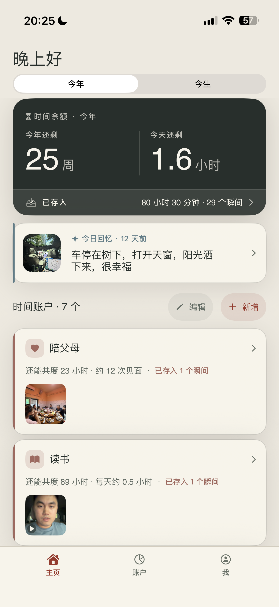
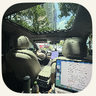
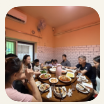
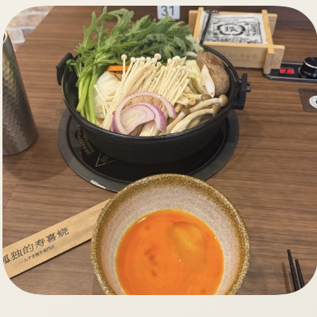

原版
真机截图 · 今年
Current

层级平均大数字、回忆、账户卡都在用相近的视觉音量。
卡片偏高一条账户占用大量垂直空间，很快进入滚动。
照片是附件图片尺寸小，还没成为“存下时间”的情感证据。
Design proposal · 2026.07.10
这一版参考「墨戒·账本」的纸墨体系：暖白纸底、黑色主信息、极细丝线、几乎没有阴影，松墨绿只负责动作与状态。先看见时间，再看见一段被留下的生活，最后才是账户明细。
01 · Home
数字仍然是锚点，但不再让每个模块同时抢注意力。新版保留今年 / 今生、时间余额、已存入和前 4 个账户，同时把真实回忆提到第一屏。

7 月 10 日 · 把今天留在今天



02 · Widget
中号 Widget 改用「小碑」式句子优先：先读“还剩多少时间”，再看今日账本和最近留下的一段生活。整块 Widget 都是暖白纸面，不再用深色左右切割。
03 · Decisions
借用「墨戒」的纸墨秩序，不复制它的戒断语义。TimeBank 仍然围绕时间余额、真实回忆和快捷存入，只把视觉音量降下来。